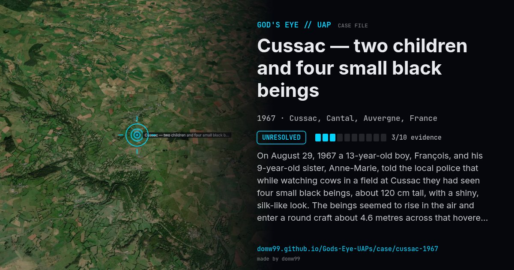

Cussac — two children and four small black beings

On August 29, 1967 a 13-year-old boy, François, and his 9-year-old sister, Anne-Marie, told the local police that while watching cows in a field at Cussac they had seen four small black beings, about 120 cm tall, with a shiny, silk-like look. The beings seemed to rise in the air and enter a round craft about 4.6 metres across that hovered over the field. The police noted a smell of sulphur and dried grass at the spot the craft was said to have left. The file is one of those that the French government put online in March 2007, and one of the children was later said to have suffered lasting health effects.
Explanation
No explanation has been agreed. The two children, aged 13 and 9, gave the same account to the police, and the police recorded a smell of sulphur and dried grass where the sphere was said to have stood. There were no other witnesses.
What was seen
Shape: Round craft about 4.6 m across, with four small black beings
Witnesses: François (13) and his sister Anne-Marie (9)
Duration: Minutes
Sources
Browse
- France
- 1960s
- Unresolved
- Close encounters
- Official government documents
- Physical traces
- Spheres and orbs